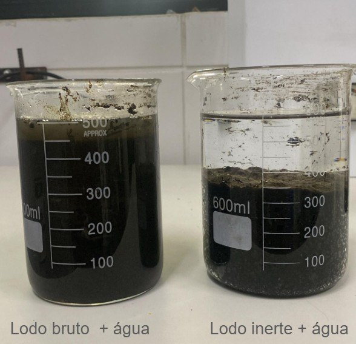
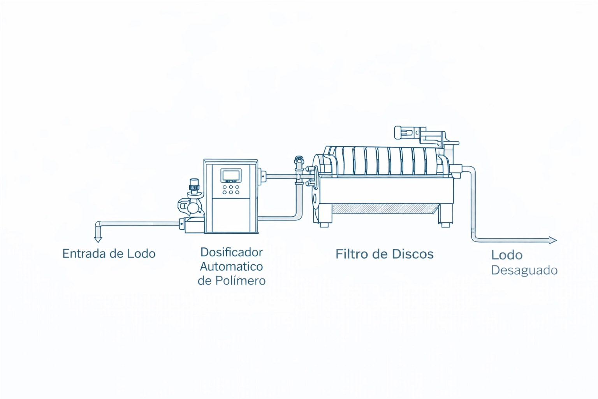

O problema que resolve
O lodo das estações de tratamento de esgoto sai com muita água, composição variável e pode conter metais pesados (cádmio, chumbo, mercúrio, cromo, cobre, zinco) e outros contaminantes, como fármacos, PFAS e microplásticos, que se concentram na fase sólida.
Na prática, isso significa transportar grandes volumes de material úmido até o aterro, a um custo alto, e ocupar rapidamente a sua capacidade. Usos mais sustentáveis, como recuperação de áreas degradadas ou biossólidos, só são possíveis se o lodo for estável e não liberar metais.
Como funciona
Os polímeros de encapsulamento atuam em três frentes ao mesmo tempo:
- Neutralizam as cargas superficiais e agregam as partículas.
- Encapsulam os metais em uma matriz polimérica hidrofóbica, uma barreira físico-química que reduz a sua solubilidade e mobilidade.
- Expulsam a água intersticial dos poros e da estrutura coloidal, formando flocos mais densos, coesos e estáveis.

Etapas do processo
Acondicionamento
Dosagem controlada do mix de polímeros no lodo, com agitação: neutralização de cargas e início do encapsulamento.
Adensamento
A matriz hidrofóbica libera a água intersticial e forma flocos densos e coesos.
Desaguamento
Separação sólido–líquido em filtro de discos ou prensa, em menos tempo.
Desidratação
Sólido com mais teor de sólidos e menos volume para manejar e transportar.
Disposição ou valorização
Sólido não lixiviável (ABNT NBR 10004), para aterro com menor impacto ou uso benéfico.

Onde se aplica
- Lodo de estações de tratamento de esgoto sanitário.
- Lodos com metais e contaminantes recalcitrantes que precisam ser imobilizados antes da destinação.
- Plantas que querem reduzir o custo de transporte e a ocupação de aterro.
- Projetos de valorização: biossólido para uso agrícola ou florestal (CONAMA 498/2020), recuperação de áreas degradadas, cobertura diária de aterros e aproveitamento energético.
Diferenciais
- Faz duas coisas em uma etapa: melhora o desaguamento e inertiza os metais, já no desaguamento.
- Reduz a mobilidade e a lixiviação dos metais, e não apenas o volume.
- Derivada de uma tecnologia já aplicada em escala industrial no tratamento de chorume.
- Abre destinações que o lodo bruto não permite, como biossólidos e recuperação de áreas.
- Escalável: o piloto de 20 m³/h pode ser redimensionado para vazões menores ou maiores.
Resultados comprovados
Em ensaio com lodo da ETE Barueri (SABESP), o lodo inertizado se separou da água, com os sólidos sedimentados e a água clara, enquanto o lodo bruto permaneceu disperso e turvo.

Colocado em água limpa, o lodo inertizado permanece íntegro, sem turvar a água nem liberar os poluentes:
Resultados de laboratório: ensaios de lixiviação e solubilização (NBR 10005/10006), teor de sólidos e redução de volume medidos.
O piloto
Sistema de desidratação de lodos de até 20 m³/h, em operação contínua, para validar a tecnologia em condições reais:
- bombas helicoidais para lodos de alta viscosidade;
- preparo e dosagem automática de polímero (cerca de 3 mL/L);
- prensa desidratadora / filtro de discos;
- agente oxidante opcional e painel de controle automatizado.

Propriedade intelectual
A formulação é um mix proprietário de polímeros desenvolvido pela GETA. A tecnologia deriva da rota de tratamento de chorume da GETA, que tem pedido de patente BR 10 2026 020875 2 no INPI.
Situação da proteção específica da rota de lodo (patente própria, segredo industrial).
Indicadores econômicos
Opcional: benefícios econômicos sem divulgar valores (esta parte não aparece no site).
Cases relacionados
Outras tecnologias GETA
Tratamento de Chorume
Processos físico-químicos avançados sem dependência de sistemas biológicos.
CDR de Alta Performance
Elevado poder calorífico e baixa umidade em combustível derivado de resíduos.
Processo de Oxidação Seletiva (POS)
Radicais carbonato gerados a partir de CO₂ atacam só os compostos inibidores, para gerar mais biometano.
Quer aplicar uma dessas tecnologias?
Avaliamos o seu efluente ou resíduo e indicamos a rota mais adequada, com ensaio de tratabilidade.